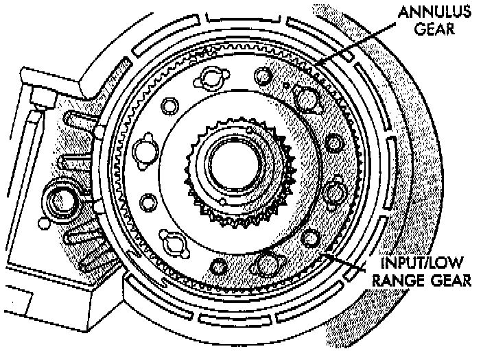
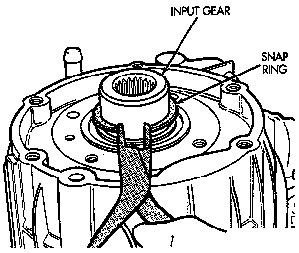
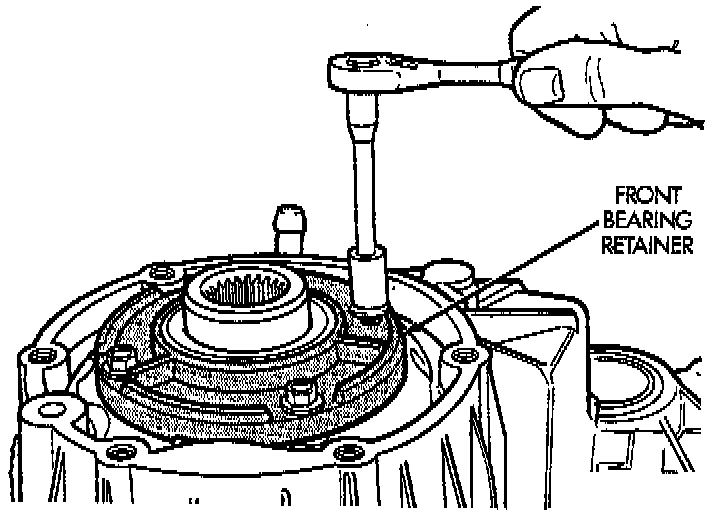

Input Gear/Low Range Installation

1. Align and install low range/input gear assembly in front case. Be sure low range gear pinions are engaged in annulus gear and that input gear shaft is fully seated in front bearing.

2. Install snap-ring to hold input/low range gear into front bearing.
3. Clean gasket sealer residue from retainer and inspect retainer for cracks or other damage.
4. Apply a 3 mm (1/8 inch) bead of MOPAR gasket maker or silicone adhesive to sealing surface of retainer.
5. Align cavity in seal retainer with fluid return hole in front of case.
CAUTION: Do not block fluid return cavity on sealing surface of retainer when applying MOPAR gasket maker or silicone adhesive sealer. Seal failure and fluid leak can result.

6. Install bolts to hold retainer to transfer case. Tighten to 21 Nm (16 ft. lbs.) of torque.